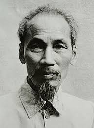

Trung thu
Trung thu vành vạch mảnh gương thu
Sáng khắp nhân gian bạc một màu
Sum họp nhà ai ăn Tết đó
Chẳng quên trong ngục kẻ ăn sầu
Trung thu ta cũng Tết trong tù
Trăng gió đêm thu gợn vẻ sầu
Chẳng được tự do mà thưởng nguyệt
Lòng theo vời vợi mảnh trăng thu
Tác giả: Hồ Chí Minh
